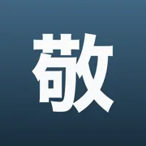
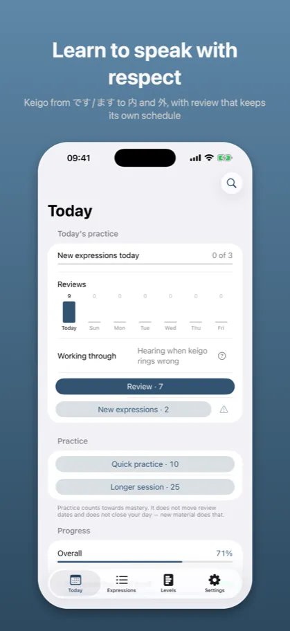
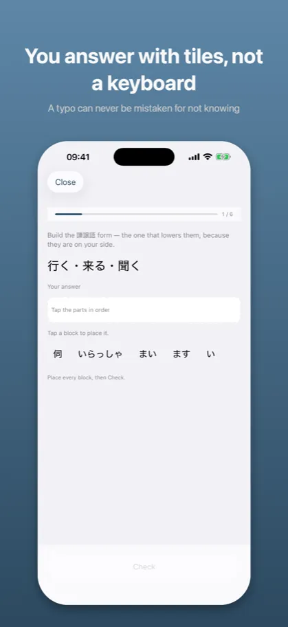
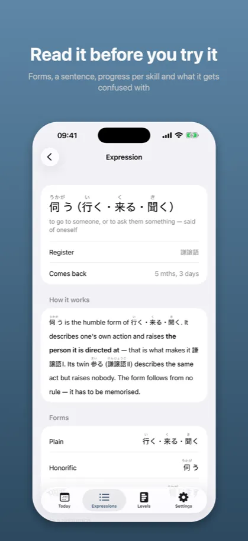
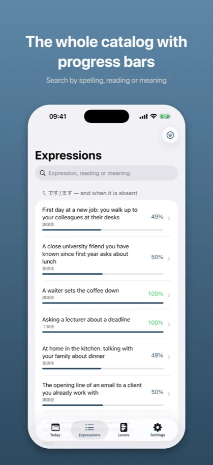
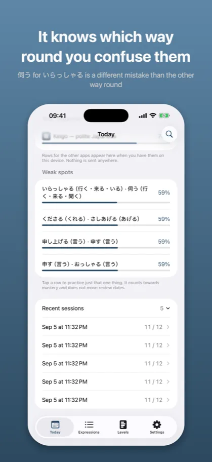

Keigo: Polite Japanese敬語
Formal Japanese for work
App Store →Free app with an in-app purchase
Knowing the form is not the same as knowing who to use it on. Too much keigo is a mistake exactly as much as too little – and that half is what nobody teaches.
What it looks like
{kind=link}

Keigo from です/ます to 内 and 外, with review that keeps its own schedule
{kind=link}

A typo can never be mistaken for not knowing
{kind=link}

Forms, a sentence, progress per skill and what it gets confused with
{kind=link}

Search by spelling, reading or meaning
{kind=link}

伺う for いらっしゃる is a different mistake than the other way round
Description from the store
The Japanese honorific register is not a list of forms to memorise. It is a decision about who you are talking to.
You can know that 伺う is the humble form of 行く and still aim it at a classmate one year above you. You can know お〜になる and use it about your own boss in front of a customer. The difference is not in the form – it is in who is speaking to whom. That is what Keigo asks about.
FOUR SKILLS MEASURED APART
Register – who this form is right for.
Direction – whose action it is: yours or theirs.
Production – building the form from its parts.
Overdone keigo – recognizing that the politeness is one step too much.
You can pick the humble register flawlessly and consistently humble the wrong person. An app that averages those four numbers into one has no way to show you that. This one shows it.
TOO MUCH KEIGO IS A MISTAKE TOO
二重敬語 and バイト敬語 – forms that sound polite and are wrong. They are heard every day and almost nobody corrects them. Here they are a question type of their own and a skill measured on its own.
FIVE LEVELS, NOT FIVE LISTS
- です/ます and when it is absent – before raising the tone you need to know where zero sits.
- The twenty irregulars – forms no rule will produce.
- Productive patterns – お〜になる, お〜する, 美化語.
- Favors and direction – 〜ていただく, 〜てくださる and the whole difference between them.
- 内 and 外 – the same boss takes an honorific in front of a colleague and does not take one in front of a client.
IT KNOWS WHICH WAY ROUND YOU CONFUSE THEM
A mistake has a direction. Using 伺う where いらっしゃる belongs is a different fault than the reverse, because the first lowers the other person and the second raises you. The app measures the two apart and says which way round you swap them.
YOU ANSWER WITH TILES, NOT A KEYBOARD
Forms are built from parts. There is no text field, so a typo can never be mistaken for not knowing, and you do not need a Japanese keyboard at all.
REVIEW THAT KEEPS ITS OWN SCHEDULE
Vocabulary comes back on a ladder of intervals, from a few hours to half a year. Patterns and rules have no due dates, and that is a decision rather than a gap: お〜になる should come out without thinking, and 内/外 is a judgment, not a fact that fades. You see one Today screen, one daily goal and one number; the difference sits in which questions come up.
NO ACCOUNT, NO NETWORK, NO ADS
The material ships inside the app. Your progress stays on the device and goes nowhere. There is no sign-in, no tracking and no advertising.
WHAT IS FREE
Levels 1 and 2 in full – です/ます and all twenty irregular forms. A single purchase opens levels 3 to 5: productive patterns, favors, 内/外 and overdone keigo. No subscription.
THE REST OF THE FAMILY
Keigo is the seventh app in the same family. Kaname teaches grammar, Katsuyokei conjugation, Joshi particles, Kazoekata counters, Bunmyaku reading in context, Kuzushi casual speech. Each one shows your progress in the others – with no account and without sending anything anywhere.
THE ARBITER
The category split and every contested call follow 文化庁「敬語の指針」(2007). Where business etiquette guides disagree with each other, the app says whose side it takes.
The description above is the same text that stands on the App Store product page – it comes from the same file.
App Store →Free app with an in-app purchase
Common questions
What does Keigo teach?
The Japanese honorific register is not a list of forms to memorise. It is a decision about who you are talking to.
You can know that 伺う is the humble form of 行く and still aim it at a classmate one year above you. You can know お〜になる and use it about your own boss in front of a customer. The difference is not in the form – it is in who is speaking to whom. That is what Keigo asks about.
What does Keigo cost?
Levels 1 and 2 in full – です/ます and all twenty irregular forms. A single purchase opens levels 3 to 5: productive patterns, favors, 内/外 and overdone keigo. No subscription.
Does it work without an account or a network?
The material ships inside the app. Your progress stays on the device and goes nowhere. There is no sign-in, no tracking and no advertising.
Documents
The other apps
- Kaname: Japanese Grammar — JLPT practice: N5 N4 N3 N2 N1
- Bunmyaku: Japanese Reading — Vocabulary, kanji, furigana
- Katsuyokei: Conjugation — Verbs, adjectives and drills
- Joshi: Japanese Particles — Grammar drills for the JLPT
- Kazoekata: Japanese Counters — Counting, kanji and drills
- Kuzushi: Casual Japanese — Anime, drama and slang
- Shindan: Japanese Level Test — JLPT placement: N5 N4 N3 N2 N1
- Kifuku: Japanese Pitch Accent — Pronunciation and listening
- Onomatope: Japanese Mimetics — Manga and anime vocabulary